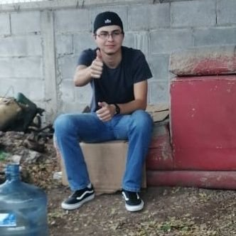

|  | Carlos Ramón Cota TalamanteIngeniero instrumentista en CLARVI Mi trabajo consiste en automatizar sistemas de tratamientos de agua utilizando PLC's acompañados de sensores que usualmente son de 4-20mA al igual que diseñar los diagramas eléctricos para su posterior ensamble. |
| Fechas | Puesto | Empresa |
|---|---|---|
| Marzo 2021 | Rampero | Coppel |
| Septiembre 2021 | Técnico de mantenimiento | Coppel |
| Febrero 2022 | Ing. Sistemas de Tratamiento de aguas | CLARVI |
| Abril 2022 | Ing. instrumentista | CLARVI |
| Trabajo bajo presión | ⭐⭐⭐⭐ |
| Iniciativa | ⭐⭐⭐⭐⭐ |
| Autodidacta | ⭐⭐⭐⭐ |